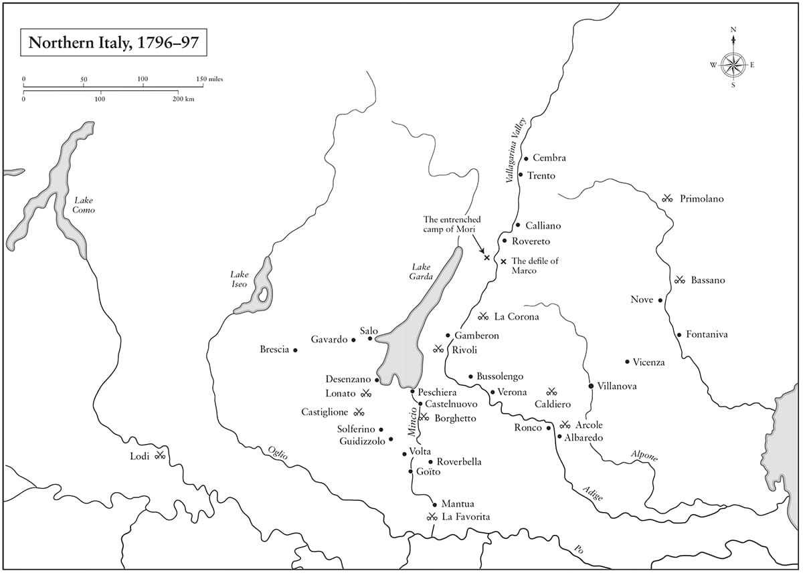

Ngày 15 tháng Năm năm 1796, Tướng Bonaparte tiến vào Milan, dẫn đầu một đạo quân trẻ trung vừa mới vượt qua cây cầu ở Lodi, và cho thế giới biết rằng sau tất cả những thế kỷ vừa trôi qua, Caesar và Alexander đã có một người kế tục.
• Stendhal, The Charterhouse of Parma
(Tu viện thành Parma)
Tài năng quan trọng nhất của một vị tướng là biết được suy nghĩ của binh lính và giành được niềm tin của anh ta, và trong cả hai khía cạnh này, người lính Pháp khó làm chỉ huy hơn người lính khác. Anh ta không phải là một cỗ máy cần được ra lệnh để di chuyển, anh ta là một thực thể có lý trí cần sự dẫn dắt.
• Napoleon nói với Chaptal
⚝ ✽ ⚝
Một số người sau này có nói rằng Napoleon là một đại lượng vô danh khi ông tới bản doanh Đạo quân Italy tại Nice ngày 26 tháng Ba năm 1796, và tất cả các chỉ huy sư đoàn dưới quyền ông đều coi thường ông khi họ gặp Napoleon lần đầu tiên, vì như một người cùng thời mỉa mai, ông đã “kiếm được tiếng tăm trong một vụ bạo loạn trên đường phố và chức chỉ huy trên một cái giường cưới”. Trên thực tế, ông đã từng là chỉ huy pháo binh của chính đạo quân này chỉ mới hai năm trước đó, và được nhiều người biết đến sau thành công của ông tại Toulon, và ông đã viết không ít hơn ba báo cáo chi tiết cho Cục Đồ bản về phương thức giành thắng lợi trong chiến dịch sắp tới. Cũng là lẽ tự nhiên khi ban đầu có một vài sự bực tức trước việc ông được cử giữ chức tư lệnh nắm quyền chỉ huy các tướng lĩnh giàu kinh nghiệm hơn, song các sĩ quan của Napoleon biết quá rõ ông là ai.
Napoleon nắm quyền chỉ huy năm tư lệnh sư đoàn. Người lớn tuổi nhất trong năm vị, Jean Sérurier, đã có 34 năm phục vụ trong quân đội Pháp. Ông ta đã phục vụ trong Chiến tranh Bảy năm và đã nghĩ tới chuyện giải ngũ khi Cách mạng bùng nổ, song lại tiếp tục chiến đấu tốt trong những năm tiếp theo và được phong trung tướng vào tháng Mười hai năm 1794. Pierre Augereau, 38 tuổi, là một người cao lớn, ngạo mạn, có phần lỗ mãng, từng là lính đánh thuê, người bán đồng hồ và thầy dạy khiêu vũ với các biệt danh “đứa con của dân chúng” và “tên kẻ cướp ngạo nghễ”. Ông ta đã giết hai người trong các cuộc quyết đấu và một sĩ quan kỵ binh trong một cuộc ẩu đả, đồng thời thoát khỏi sự tra tấn của Tòa án Dị giáo Lisbon nhờ vào trợ giúp tích cực từ người vợ Hy Lạp mạnh mẽ của mình. André Masséna, cũng 38 tuổi, ra khơi với tư cách một cậu bé phục vụ trên tàu từ năm 13 tuổi, nhưng đã chuyển sang lục quân năm 1775 và trở thành thượng sĩ rồi bị thải hồi ngay trước khi Cách mạng xảy ra. Ông này trở thành một tay buôn lậu và kinh doanh trái cây ở Antibes trước khi gia nhập Vệ binh Quốc gia năm 1791 và nhanh chóng thăng tiến trên thang cấp bậc. Thành tích chiến đấu của André Masséna trong cuộc vây hãm Toulon đã giúp ông ta được thăng hàm trung tướng Tư lệnh sư đoàn thuộc Đạo quân Italy, tại đây ông ta đã phục vụ một cách xuất sắc vào năm 1795. Amédée Laharpe là một người Thụy Sĩ 32 tuổi với bộ ria rậm. Jean-Baptiste Meynier đã chiến đấu trong Đạo quân Đức, nhưng vào giữa tháng Tư Napoleon đã báo cáo với Đốc chính rằng viên tướng này “không có năng lực, không thích hợp để chỉ huy một tiểu đoàn trong một cuộc chiến tranh tích cực như chiến dịch này”. Cả năm người đều là các chiến binh kỳ cựu dày dạn kinh nghiệm, trong khi Napoleon thậm chí còn chưa từng chỉ huy số lính đông bằng một tiểu đoàn bộ binh trong đời mình. Các tướng lĩnh này sẽ là một nhóm cứng cựa khó gây ấn tượng, nói gì tới cảm hứng. Như Masséna sau này nhớ lại:
⚝ ✽ ⚝
Masséna đã nhớ nhầm về ý cuối cùng – họ không tấn công trong suốt một tháng sau đó – nhưng ông ta đã nắm bắt được tinh thần tích cực tỏa ra từ Napoleon, sự tự tin của ông, những đòi hỏi đến ám ảnh về thông tin của ông, điều sẽ trở thành một nét đặc trưng trong suốt cuộc đời ông, cũng như tình yêu ông dành cho vợ.
Trong cuộc gặp ban đầu đó, Napoleon đã cho các chỉ huy dưới quyền thấy tuyến đường Savona-Carcare dẫn tới ba thung lũng, và bất cứ thung lũng nào trong số này cuối cùng cũng có thể dẫn họ tới vùng đồng bằng Lombardy giàu có. Piedmont đã chống lại cuộc Cách mạng Pháp và ở trong tình trạng chiến tranh với Pháp từ năm 1793. Napoleon tin rằng nếu đạo quân của ông có thể đẩy lui quân Áo về phía đông và chiếm lấy pháo đài kiên cố ở Ceva, họ có thể loại quân Piedmont khỏi vòng chiến đấu bằng cách uy hiếp thủ đô Turin. Điều này đồng nghĩa với việc tung 40.000 quân Pháp chống lại 60.000 quân Áo và Piedmont, song Napoleon nói với các chỉ huy dưới quyền là ông sẽ sử dụng tốc độ và nghi binh để giành thế chủ động. Kế hoạch của ông được dựa trên cả Principes de la guerre des montagnes (Các nguyên tắc của chiến tranh trên địa hình núi) (1775) của Pierre de Bourcet và một chiến lược trước đó dự kiến để sử dụng cho một chiến dịch chống lại Piedmont vào năm 1745, sau đó đã bị Louis XV hủy bỏ, nhưng cũng tập trung vào việc chiếm Ceva. Bourcet viết về tầm quan trọng của việc vạch kế hoạch rõ ràng, tập trung lực lượng, và liên tục khiến kẻ thù mất cân bằng. Chiến dịch của Napoleon tại Italy sẽ trở thành một chiến dịch tác chiến kinh điển theo mọi nghĩa của khái niệm này.
•••
Về phần Đốc chính, Italy chỉ là một chiến trường thứ yếu. Họ đã tập trung nguồn lực của mình ở Tây và Nam Đức, nơi hai đạo quân chủ lực của nền Cộng hòa là Đạo quân Rhine và Moselle dưới quyền Tướng Jean Moreau cùng Đạo quân Sambre và Meuse dưới quyền Tướng Jean-Baptiste Jourdan, đã mở một cuộc tấn công vào tháng Sáu và đạt được ít nhiều thành công ban đầu. Vị Đại Công tước đáng gờm Charles von Habsburg, em trai của Hoàng đế Áo Francis, chiến đấu với tất cả tài năng của mình, đánh bại Jourdan ở Amberg vào tháng Tám năm 1796 và tại Wurzburg vào tháng Chín. Ông ta sau đó quay sang Moreau và đánh bại viên tướng này ở Emmendingen vào tháng Mười, trước khi đánh bật cả hai đạo quân Pháp trở lại qua sông Rhine. Do kết quả của việc xem nhẹ chiến dịch quân sự ở Italy, Napoleon chỉ được giao cho có 40.000 franc – ít hơn lương hằng năm của ông – để chi trả cho toàn bộ chiến dịch. Theo một câu chuyện, rất có thể là không chính xác, để trả tiền di chuyển của chính mình và sĩ quan phụ tá từ Paris tới Nice, ông đã bán thanh kiếm cán nạm bạc của mình và ra lệnh cho Junot mang số tiền thu được ra thử vận may ở các chiếu bạc.
Vì thế, khi Napoleon tới Nice, ông thấy đạo quân của mình ở tình trạng gần như án binh bất động. Trời băng giá trong khi binh lính còn chẳng có nổi áo khoác mà mặc. Suốt ba tháng ròng, họ chẳng được cấp phát chút thịt nào, bánh mì cũng được chăng hay chớ. Pháo được kéo bằng la, vì ngựa kéo đã chết sạch vì suy dinh dưỡng, và các tiểu đoàn không có giày hoặc phải đi dép, mặc những bộ quân phục tạm bợ thường là lột lại của người chết. Lính tráng chỉ được phân biệt nhờ đeo bên hông các túi đạn được quân đội cấp phát, và súng hỏa mai của rất nhiều người thiếu lưỡi lê. Họ đã không được trả lương từ nhiều tháng nay, dẫn tới những lời xì xào về binh biến. Dịch sốt hoành hành dữ dội, giết chết không ít hơn 600 người thuộc Bán lữ đoàn(*) 21 trong 20 ngày. Mariana Starke, một nhà văn Anh sống tại Florence, đã mô tả chính xác “tình trạng thảm hại” của đạo quân Pháp trước khi Napoleon tới: “mọi nhu yếu phẩm đều thiếu, và một dịch sốt, hậu quả tự nhiên của nạn đói… chán nản và suy yếu bởi bệnh tật, thiếu ngựa, đại bác và gần như tất cả các trang bị khác cho chiến tranh.”

Phản hồi của Napoleon cho “tình trạng thảm hại” mà đạo quân của ông lâm vào là giáng cấp Meynier và ra chỉ thị vắn tắt cho phụ trách hậu cần Chauvet tái tổ chức hoàn toàn ban hậu cần, như ông báo cáo lên Đốc chính ngày 28 tháng Ba, bao gồm “đe dọa các nhà thầu, những kẻ đã ăn cắp rất nhiều và vẫn được ghi công trạng”. Ông cũng ra lệnh cho Công sứ Faipoult, đại diện của Pháp tại Genoa, nài nỉ để “âm thầm” vay 3 triệu franc từ các nhà tài chính Do Thái ở thành phố này, và ông triệu hồi lực lượng kỵ binh trở về từ khu chăn thả mùa đông ở thung lũng sông Rhône. Trong vòng hai ngày từ khi tới Nice, Napoleon đã giải thể Tiểu đoàn 3 của Bán lữ đoàn 209 vì binh biến, thải hồi các sĩ quan và hạ sĩ quan của đơn vị này khỏi quân đội, và chia các binh lính thuộc những cấp bậc còn lại thành từng nhóm năm người tới các tiểu đoàn khác. Ông tin rằng điều cốt yếu là tất cả mọi người cần được đối xử theo cùng quy định, và nhận thức rõ, như ông nói, rằng “Nếu có một đặc quyền độc nhất được dành cho bất cứ ai, không quan trọng là người nào, thì sẽ chẳng có ai tuân lệnh hành quân”. Ngày 8 tháng Tư, ông báo cáo với Đốc chính rằng ông đã buộc phải trừng phạt thuộc cấp của mình vì hát những bài hát phản cách mạng, và ông đã đưa hai sĩ quan ra tòa án binh xử vì hô “Nhà vua vạn tuế!”
Các tư lệnh sư đoàn của Napoleon lập tức bị ấn tượng trước khả năng làm việc cường độ cao của ông. Các thuộc cấp không bao giờ được phép nói họ đang để tâm tới một điều gì đó rồi sau đấy lại bỏ bẵng mặc nó trôi đi, và ban tham mưu vốn đã ì ra tại Nice suốt bốn năm đột nhiên cảm thấy hiệu ứng kích thích từ nhiệt huyết của Napoleon. Trong chín tháng kể từ lúc ông tới Nice đến cuối năm 1796, ông đã gửi đi hơn 800 lá thư và bản thông báo về mọi chủ đề, từ vị trí các cậu bé đánh trống phải đứng trong những cuộc diễu binh cho tới các trường hợp cần phải cử bài “Marseillaise”. Augereau là người đầu tiên trong số tướng lĩnh của ông bị chinh phục, tiếp theo là Masséna. “Cái tay tướng quân loắt choắt khốn kiếp đó quả thực đã làm tôi phát khiếp!” Augereau sau này nói với Masséna.
Napoleon quyết định tận dụng tối đa tiếng tăm của mình như một người lính “chính trị”. Trong Nhật lệnh ngày 29 tháng Ba, ông nói với binh lính rằng họ sẽ “tìm thấy ở ông một đồng đội, mạnh mẽ trong niềm tin vào Chính phủ, tự hào về sự quý trọng của những người ái quốc, và kiên quyết dành cho Đạo quân Italy một số phận xứng đáng với nó”.(*) Nói cho cùng, một viên tướng được Đốc chính lắng nghe có thể giúp binh lính của ông ta được ăn. Napoleon lo ngại sự vô kỷ luật xuất hiện khi các binh lính có vũ trang đối mặt với cảnh sắp chết đói. “Không có bánh mì, người lính thường có xu hướng bạo lực thái quá”, ông viết, “khiến người ta phải đỏ mặt hổ thẹn vì là một con người”.(*) Chắc chắn là ông đã liên tục gửi những yêu cầu lên Paris, và tới ngày 1 tháng Tư ông cũng nhận được 5.000 đôi giày. Một số lượng thư nhiều đến mức đáng ngạc nhiên của ông trong suốt sự nghiệp nhắc tới việc cung cấp giày ủng cho binh lính của mình. Cho dù có thể ông không bao giờ nói: “Một đạo quân hành quân bằng cái dạ dày của nó”, như các giai thoại vẫn đồn thổi, song ông luôn ý thức sâu sắc rằng, không nghi ngờ gì nữa, một đạo quân phải hành quân trên đôi chân của nó.
Cũng Nhật lệnh ngày 29 tháng Ba đó thông báo rằng viên tướng 43 tuổi Alexandre Berthier, một cựu kỹ sư từng chiến đấu trong Chiến tranh giành Độc lập của Mỹ, giờ đây sẽ là Tham mưu trưởng của Napoleon, một vị trí mà ông ta sẽ đảm nhiệm tới năm 1814. Berthier đã chiến đấu xuất sắc trong chiến dịch Argonne năm 1792 và ở vùng Vendée trong ba năm tiếp theo, còn em trai ông ta từng ở Cục Đồ bản cùng Napoleon. Napoleon là vị tư lệnh đầu tiên sử dụng một tham mưu trưởng theo nghĩa hiện đại của vị trí này, và ông chẳng thể nào chọn được người nào hiệu quả hơn thế. Với một trí nhớ chỉ đứng thứ hai sau Napoleon, Berthier có thể giữ cho đầu óc minh mẫn sau 12 giờ ghi chép; có lần vào năm 1809, ông ta được triệu tập không dưới 17 lần chỉ trong một buổi tối. Tàng thư Quốc gia, Thư viện Quốc gia và Tàng thư của Đại quân tại Vincennes chứa đầy những mệnh lệnh viết tay với nét chữ rõ ràng của thư ký và những câu văn ngắn cô đọng mà Berthier dùng để liên lạc với các đồng nghiệp của mình, chuyển tải các yêu cầu của Napoleon bằng những từ ngữ lịch sự nhưng cứng rắn, bắt đầu bất di bất dịch bằng “Hoàng đế yêu cầu tướng quân khi nhận được mệnh lệnh này ông sẽ…” Một trong những phẩm chất của Berthier là khả năng ngoại giao được thể hiện tinh tế tới mức bằng cách nào đó ông ta đã tìm cách thuyết phục được vợ mình, nữ Công tước Maria của Bavaria, sống cùng một tòa lâu đài với nhân tình của ông ta là phu nhân Visconti (và ngược lại). Ông ta hiếm khi phản đối một cách trực tiếp các ý kiến của Napoleon, trừ khi dựa trên những lý lẽ chặt chẽ có tính logic, và xây dựng một nhóm làm việc nhằm đảm bảo các mong muốn của tổng tư lệnh được nhanh chóng triển khai thành hành động. Năng lực đặc biệt của ông ta đạt tới mức có thể coi gần như là thiên tài, đó là việc chuyển hóa những yêu cầu chung sơ lược nhất thành những mệnh lệnh văn bản chính xác cho từng bán lữ đoàn. Công tác tham mưu hầu hết là cực kỳ hiệu quả. Để triển khai những mệnh lệnh nhanh đến chóng mặt của Napoleon đòi hỏi một đội ngũ những thư ký, liên lạc, trợ lý và sĩ quan phụ tá thạo việc, một hệ thống phân loại hồ sơ rất tiên tiến, ngoài ra ông cũng thường làm việc thâu đêm. Một trong những lần hiếm hoi khi Napoleon phát hiện ra một sai sót về quân số của một bán lữ đoàn, ông viết thư cho Berthier để sửa, và nói thêm: “Tôi đọc những bản trình bày về vị trí bố trí quân này cũng hào hứng như đọc một cuốn tiểu thuyết vậy.”
Ngày 2 tháng Tư năm 1796, Napoleon chuyển bản doanh của đạo quân tới Albenga bên bờ vịnh Genoa. Cùng hôm đó, Chauvet qua đời vì dịch sốt tại Genoa. Đây là “một tổn thất thực sự cho quân đội”, Napoleon báo cáo, “ông ấy là người tích cực, mạnh dạn. Đạo quân rơi nước mắt tưởng nhớ ông ấy”. Chauvet là người đầu tiên trong khá nhiều bạn bè và thuộc cấp sẽ chết khi tham gia chiến dịch cùng Napoleon, và với họ ông đều cảm thấy thực sự đau buồn.
Người Áo – đã kiểm soát miền Bắc Italy từ năm 1714 – đang phái một đạo quân lớn tiến về phía tây tới Piedmont để giao chiến với người Pháp, và người Piedmont đang được Hải quân Hoàng gia Anh từ Corse tới tiếp tế. Điều này buộc Napoleon phải chuyển mọi thứ ông cần qua những con đèo trên núi cao ở Liguria. Khi tới Albenga ngày 5 tháng Tư, ông nói với Masséna và Laharpe kế hoạch của mình nhằm chia cắt kẻ thù giữa Careare, Altare và Montenotte. Tư lệnh quân Áo, Johann Beaulieu, có nhiều kinh nghiệm và tài năng nhất định, song ông ta đã 71 tuổi và từng bị quân Pháp đánh bại trước đây. Là một người nghiên cứu sắc sảo các chiến dịch trong quá khứ, Napoleon biết Beaulieu vốn thận trọng, nên ông dự định sẽ khai thác nhược điểm này. Liên minh giữa Áo và Piedmont rất yếu, và Beaulieu đã được cảnh báo không nên đặt quá nhiều niềm tin vào nó. (“Giờ đây khi tôi biết về các liên minh”, Thống chế Foch từng nói đùa hồi Thế chiến Thứ nhất, “tôi thấy ít tôn trọng Napoleon hơn!”) Ngay cả trong nội bộ quân đội Áo, bản chất hỗn tạp của Đế quốc Habsburg rộng lớn đồng nghĩa với việc các đơn vị của nó thường không nói cùng một ngôn ngữ; thứ tiếng nói chung được hàng ngũ sĩ quan của quân đội này sử dụng là tiếng Pháp. Thêm vào các rắc rối của Beaulieu là ông ta còn phải chịu sự chỉ đạo của Hội đồng Triều đình khó lường và quan liêu ở Vienna, có xu hướng đưa ra các mệnh lệnh quá muộn đến mức khi tới nơi chúng đã lạc hậu với các sự kiện. Ngược lại, Napoleon lên kế hoạch điều quân táo bạo mà ngày nay được biết đến trong các học viện quân sự là “chiến lược vị trí trung tâm”: ông duy trì việc ở giữa hai đạo quân đối đầu với mình, và trước tiên sẽ tấn công vào một đạo quân rồi sau đó vào đạo quân còn lại trước khi chúng có thể hợp nhất. Đó là một chiến lược ông sẽ tuân theo trong suốt sự nghiệp của mình. “Nó trái với mọi nguyên tắc khi để các cánh quân không thể liên lạc với nhau phải hành động một cách riêng rẽ chống lại một lực lượng tập trung với liên lạc thông suốt, là một trong những châm ngôn của ông về chiến tranh.
“Ở đây anh rất bận rộn”, ông viết cho Josephine từ Albengan. “Beaulieu đang di chuyển đạo quân của ông ta. Bọn anh đang mặt đối mặt. Anh hơi mệt. Ngày nào anh cũng ở trên lưng ngựa”.(*) Những lá thư hằng ngày ông gửi Josephine tiếp tục nối nhau suốt chiến dịch, trải kín hàng trăm trang với nét chữ nguệch ngoạc đầy đam mê. Một số lá thư được viết cùng ngày với những trận đánh lớn. Ông liên tục chuyển từ những lời quả quyết lãng mạn (“Anh không trải qua một ngày nào mà không yêu em”) tới những suy nghĩ hướng nội hơn (“Anh không uống tách trà nào mà không nguyền rủa thứ vinh quang và tham vọng đó, vì đã chia cách anh với người bạn đời của anh”), hay than vãn về lý do tại sao bà hiếm khi nào viết thư trả lời. Còn khi trả lời, bà gọi ông là “ông” khiến ông rất khó chịu. Những lá thư của Napoleon đầy ắp những ám chỉ e dè về ái dục, với khao khát vồ vập lấy bà ngay nếu bà lên đường đến với ông tại Italy. “Một cái hôn lên ngực em, rồi thấp hơn một chút, rồi thấp hơn rất rất nhiều”, ông viết trong một lá thư. Có một số tranh cãi về việc liệu “nữ Nam tước de Kepen bé nhỏ” (thỉnh thoảng là “Keppen”) trong các lá thư của ông có phải là một biệt hiệu mà Napoleon dành để gọi bộ phận sinh dục của Josephine hay không. Thật đáng buồn, ý nghĩa thực của “nữ Nam tước de Kepen” đã bị thất lạc theo thời gian, cho dù nó có thể đơn giản là tên của một trong những con chó cưng của Josephine, vì thế “Những lời chào trân trọng tới nữ nam tước de Kepen bé nhỏ” có thể không có chút âm hưởng tình dục nào. Về cách ví von của một trí tưởng tượng nghèo nàn hơn, kiểu “khu rừng đen bé nhỏ”, thì không phải nghi ngờ, như nó được nhắc đến: “Anh dành cho nó một nghìn cái hôn và nóng lòng chờ tới khoảnh khắc được ở đó”. Không mấy lãng mạn, những lá thư này thường được ký “Bonaparte” hay “BP”, giống như các mệnh lệnh của ông. “Từ biệt, người phụ nữ, nỗi giày vò, niềm vui, hy vọng và tâm hồn của đời anh, người anh yêu, người anh sợ, người là cảm hứng tạo nên trong anh những cảm giác dịu dàng gợi nhắc đến Tự nhiên và những cảm xúc mạnh mẽ sôi sục như sấm sét”, là một câu hoàn toàn mang tính đại diện ở một trong những lá thư này.
•••
“Quân đội đang ở trong một tình trạng thiếu thốn khủng khiếp”, Napoleon báo cáo lên Đốc chính ngày 6 tháng Tư từ Albenga. “Tôi vẫn còn những chướng ngại lớn phải vượt qua, nhưng chúng có thể vượt qua được. Tình trạng quẫn bách đã dẫn tới bất tuân lệnh, và nếu không có kỷ luật sẽ chẳng thể có chiến thắng. Tôi hy vọng tất cả chuyện này sẽ thay đổi trong vài ngày”. Đạo quân Italy có quân số 49.300 người, chống lại khoảng 80.000 quân Áo và Piedmont. May thay, đến lúc đó Berthier đã giải quyết được những vấn đề tiếp tế tức thời. Napoleon lên kế hoạch bắt đầu tấn công vào ngày 15 tháng Tư, nhưng các lực lượng Áo-Piedmont đã bắt đầu cuộc tấn công của họ trước đó năm ngày, tiến lên theo đúng tuyến đường Napoleon dự định sử dụng để tiến xuống. Bất chấp biến cố không lường trước này, trong vòng 48 giờ, Napoleon đã đảo ngược được tình hình. Sau khi cho quân mình rút khỏi thành phố Savona gần như không tổn thất gì, ông có thể tổ chức một cuộc phản công. Vào tối 11 tháng Tư, nhận thấy chiến tuyến Áo bị căng ra quá dài, ông bèn kìm chân quân địch tại chỗ bằng một cuộc tấn công tại Montenotte, một ngôi làng miền núi nằm cách Savona gần 20 km về phía tây bắc trong thung lũng sông Erro, rồi sau đó phái Masséna đi vòng qua cánh phải dưới trời mưa như trút vào lúc 1 giờ sáng để vây kín địch. Khu vực này là một địa hình khó khăn cho tác chiến: một sống núi chạy từ Montenotte Superiore xuống một dãy các đỉnh núi cao từ 600 đến 900 m, lúc đó (và bây giờ vẫn vậy) có cây mọc dày xung quanh trên các triền dốc đứng. Nhiều cứ điểm lẻ do quân Áo thiết lập lúc này bị các cánh quân bộ binh Pháp vận động nhanh đánh chiếm.
Khi trận chiến kết thúc, quân Áo mất 2.500 người, trong đó có nhiều người bị bắt sống. Napoleon mất 800 người. Dù đây là một trận chiến có quy mô tương đối nhỏ, nhưng Montenotte là chiến thắng đầu tiên của Napoleon trên chiến trường trong vai trò tư lệnh, và có ảnh hưởng tích cực tới tinh thần của bản thân ông cũng như của binh lính. Vài trận đánh sau này của ông cũng tuân theo những nét đặc trưng tương tự: một đối thủ già cả thiếu nhiệt huyết; một kẻ thù không đồng nhất về dân tộc và ngôn ngữ đối đầu với quân đội Pháp đồng nhất; một điểm dễ tổn thương mà ông sẽ nhắm vào và không để tuột mất. Người Pháp đã di chuyển nhanh hơn đáng kể so với đối phương, và ông đã thực hiện việc tập trung lực lượng cho phép đảo ngược sự chênh lệch về quân số trong thời gian vừa đủ có tính quyết định.
Nét đặc trưng nữa được tái hiện là việc truy kích nhanh sau chiến thắng: sau ngày diễn ra trận Montenotte, Napoleon giao chiến một trận nữa tại Millesimo, một xóm nhỏ bên bờ sông Bormida, tại đây ông đã thành công trong việc tách rời các đạo quân Áo và Piedmont đang rút lui. Người Áo muốn rút về phía đông để bảo vệ Milan, còn người Piedmont muốn rút về phía tây để bảo vệ thủ đô Turin của họ. Napoleon đã khai thác được sự khác biệt trong yêu cầu chiến lược giữa các đối thủ của mình. Để thoát ra khỏi thung lũng sông, cả hai đạo quân này buộc phải lui về ngôi làng Dego được phòng thủ kiên cố, nơi mà vào ngày 14 tháng Tư, Napoleon giành được chiến thắng thứ ba của ông trong ba ngày. Người Áo-Piedmont mất khoảng 5.700 người, trong khi quân Pháp mất 1.500 người, phần lớn do việc Napoleon nóng lòng muốn chiếm lâu đài Cosseria được phòng thủ kiên cố.
Một tuần sau, trong trận đánh tại Mondovi, một thành phố bên bờ sông Ellero, Napoleon đã nỗ lực kìm chân quân Piedmont ở mặt trước trong khi tìm cách triển khai hai mũi hợp vây từ bên sườn. Đây là một phương thức tác chiến đầy tham vọng và khó triển khai, song một khi thành công, như trong trường hợp này, sẽ hủy hoại tinh thần đối phương. Ngày hôm sau, Piedmont xin cầu hòa. Điều này thật may mắn cho Napoleon vì ông không có vũ khí công thành hạng nặng để vây hãm Turin. Một trong những lý do vì sao ông duy trì một chiến dịch vận động linh hoạt như vậy là vì ông không có nguồn lực cho cách tác chiến nào khác. Ông đã phàn nàn với Carnot rằng ông đã “chẳng hề được hỗ trợ bởi pháo binh hay công binh, khi mà bất chấp các mệnh lệnh của ngài, tôi đã chẳng có được một người trong số những người tôi yêu cầu”. Tiến hành (hay chống lại) một cuộc vây hãm đều là không thể.
Ngày 26 tháng Tư, Napoleon gửi một bản tuyên bố đầy phấn khích cho đạo quân của ông từ Cherasco: “Ngày hôm nay, bằng sự cống hiến của mình, các bạn đã sánh ngang với các đạo quân Hà Lan và sông Rhine. Thiếu thốn mọi thứ, các bạn đã tự cung cấp mọi thứ. Các bạn đã chiến thắng những trận đánh mà không có đủ súng; vượt qua những con sông mà không có cầu; hoàn thành những cuộc hành quân gấp gáp mà không có giày; hạ trại mà không có rượu và thường không có cả bánh mì… Hôm nay, các bạn sẽ được chu cấp dư dả”. Ông tiếp: “Tôi hứa với các bạn về cuộc chinh phục Italy, chỉ với một điều kiện. Các bạn phải thề tôn trọng dân tộc được các bạn giải phóng, và trấn áp những cuộc cướp bóc ghê rợn mà những kẻ vô lại, bị kích động bởi kẻ thù, đã nhúng tay vào.”
Một đạo quân chiến thắng nhưng đói khát sẽ luôn cướp bóc. Napoleon thực sự quan tâm tới cách hành xử của binh lính và muốn kiểm soát sự tàn phá. Bốn ngày trước đó, ông đã công bố một bản Nhật lệnh quy tội những “hành vi cướp phá đáng ghê rợn” cho “những kẻ đồi bại, những kẻ chỉ gia nhập đơn vị của chúng sau trận đánh, và gây ra những hành vi thái quá làm hoen ố danh dự quân đội và Pháp”. Ông cho phép các tướng lĩnh xử bắn bất cứ sĩ quan nào để việc đó xảy ra, cho dù không có ví dụ nào về sự trừng phạt này đã thực sự diễn ra. Ông viết thư riêng gửi Đốc chính hai ngày sau tuyên bố của mình: “Tôi định bêu lên một số tấm gương xấu. Tôi sẽ vãn hồi trật tự, hoặc sẽ không chỉ huy những tên du đãng này nữa”. Đây là ví dụ đầu tiên trong số rất nhiều lời đe dọa ngoa dụ về chuyện từ chức mà ông đưa ra trong tiến trình của chiến dịch này.
Napoleon luôn phân biệt giữa chuyện “sống nhờ địa phương” mà đạo quân của ông buộc phải làm do tiếp tế không đầy đủ, với việc “cướp bóc ghê sợ”. Sự phân biệt này cần tới chút ngụy biện, song đầu óc tinh tế của ông đủ khả năng thực hiện việc này. Trong tương lai, ông sẽ thường xuyên chỉ trích các đạo quân Áo, Anh và Nga vì cướp bóc, theo cái cách mà ông cũng thừa biết quân đội của mình đã vượt xa trong nhiều trường hợp.(*) “Chúng tôi sống nhờ những gì binh lính tìm được”, một sĩ quan thời đó nhớ lại. “Một người lính không bao giờ ăn cắp bất cứ cái gì, mà chỉ là trông thấy nó mà thôi”. Một trong những chỉ huy có năng lực nhất của Napoleon, Tướng Maximilien Foy, sau này có chỉ ra rằng nếu binh lính của Napoleon “chờ đợi lương thực cho tới khi bộ máy hành chính của quân đội phân phát khẩu phần bánh mì và thịt, có lẽ họ đã chết đói.”
Tận dụng nguồn lực địa phương” cho phép Napoleon có được tốc độ tác chiến mà sẽ trở thành một yếu tố chủ chốt trong chiến lược của ông. “Sức mạnh của quân đội”, ông nói, “giống như sức mạnh trong cơ học, là tích số của phép nhân giữa số lượng và tốc độ”. Ông cổ vũ mọi thứ cho phép cơ động nhanh hơn, kể cả việc sử dụng hành quân cưỡng ép ở mức ít nhiều gấp đôi quãng đường 15 dặm mỗi ngày mà một bán lữ đoàn có thể di chuyển. “Không ai biết cách làm thế nào để một đạo quân hành quân tốt hơn Napoleon”, một sĩ quan dưới quyền ông nhớ lại. “Những chặng hành quân này thường rất cực nhọc; đôi khi một nửa số binh lính bị rớt lại đằng sau; nhưng vì họ không bao giờ thiếu ý chí, nên họ luôn tới nơi, dù tới nơi muộn hơn.
Trời ấm nên quân đội Pháp không ngủ trong lều ban đêm, vì như một cựu binh nhớ lại, các đạo quân “hành quân nhanh tới mức họ không thể mang theo bên mình mọi đồ đạc cần thiết”. Thứ duy nhất theo sát các đạo quân là những cỗ xe chở đạn. Vào cuối thế kỷ 18, các đạo quân di chuyển nhanh hơn nhiều so với đầu thế kỷ do mặt đường được cải thiện – nhất là sau khi những đề xuất của kỹ sư người Pháp Pierre Trésaguet đưa ra trong bản tài liệu về khoa học xây dựng đường bộ năm 1775 của ông ta được đón nhận. Pháo dã chiến nhẹ hơn, có nhiều tuyến đường hơn, các đoàn xe chở đồ nhỏ gọn hơn và số người đi theo các đơn vị ít hơn nhiều, đã giúp các đạo quân của Napoleon di chuyển ở tốc độ được ông tính toán là nhanh gấp đôi tốc độ các đạo quân của Julius Caesar.
•••
Quá trình thương lượng đình chiến với người Piedmont tại Cherasco bắt đầu ngay lập tức. Trong một cuộc trao đổi, Napoleon khinh miệt nói với một vị đại diện toàn quyền đã đề xuất những điều khoản trong đó để lại cho ông ít pháo đài hơn ông mong muốn: “Nền Cộng hòa, khi trao cho tôi chức chỉ huy một đạo quân, đã đánh giá tôi sở hữu đủ năng lực nhận thức về những gì quân đội đòi hỏi mà không cần đến lời khuyên từ kẻ thù của tôi”. Một trong hai nhà thương thuyết người Piedmont, Đại tá-Hầu tước Costa de Beauregard người Savoy, sau này viết một cuốn hồi ký trong đó ông ta mô tả cuộc gặp gỡ: “[Ông ấy] luôn lạnh lùng, bóng bẩy và súc tích”. Vào lúc 1 giờ sáng 28 tháng Tư, ông xem đồng hồ và nói: “Thưa các vị, tôi xin nhắc các vị là cuộc tổng tấn công đã ấn định lúc 2 giờ, và nếu tôi không nhận được cam đoan là [pháo đài] Coni sẽ được trao vào tay tôi trước cuối ngày, cuộc tấn công này sẽ không trì hoãn dù một khoảnh khắc.”
Có thể đó chỉ là một ngón lừa gạt kinh điển kiểu Napoleon, nhưng những người Piedmont không thể mạo hiểm. Thỏa thuận đình chiến được ký ngay lập tức. Tortona, Alessandria, Coni, Ceva được chuyển giao cho người Pháp, cùng với tuyến đường tới Valence và toàn bộ lãnh thổ nằm giữa Coni và Stura, Tanaro và sông Po. Bằng một thủ đoạn khôn ngoan, Napoleon khăng khăng đòi có một điều khoản bí mật cho ông quyền sử dụng cây cầu bắc qua sông Po ở Valenza, và biết rằng tin này sẽ rò rỉ tới tai người Áo khiến Beaulieu sẽ phải điều quân tới chiếm giữ cầu. Thực ra, ông đã lên kế hoạch vượt sông gần Piacenza, cách cây cầu này 112 km về phía đông.
Bên những chai rượu vang Asti dùng để ăn mừng và một kim tự tháp xếp từ bánh ngọt do các nữ tu ở Cherasco cung cấp, Napoleon công khai nói về các sự kiện của những ngày trước đó, trách cứ bản thân về những tổn thất sinh mạng tại lâu đài Cosseria trong trận Millesimo, gây ra bởi “sự nóng lòng muốn chia cắt các đạo quân Áo và Piedmont” của ông. Ông kể lại rằng mình đã đóng quân ở Dego hai năm trước, khi đang chỉ huy một đơn vị pháo binh. Hồi đó ông đã đề xuất một chiến lược tấn công tương tự, song nó đã bị một hội đồng chiến tranh bác bỏ. Rồi ông nói thêm, “Sẽ không bao giờ có chuyện một quyết định được đưa ra theo cách này trong đạo quân dưới quyền chỉ huy [của tôi]”, và nói rằng những hội đồng kiểu đó chỉ luôn được viện tới như “một phương thức hèn nhát” nhằm chia sẻ trách nhiệm.
Napoleon nói với người Piedmont rằng ông đã hành quyết một người lính vì tội cưỡng dâm vào tối hôm trước, và khen xã giao họ về cuộc rút lui chiến lược mà họ thực hiện vào các ngày 17 và 21 tháng Tư, rằng: “Các vị đã hai lần khéo léo thoát khỏi nanh vuốt của tôi”. Ông chỉ cho Beauregard thấy cái túi nhỏ đi đường trong đó ông đựng mọi đồ dùng cá nhân của mình, và nói: “Tôi có nhiều hơn những thứ vớ vẩn này khi còn là một sĩ quan pháo binh đơn giản, so với bây giờ khi tôi là tư lệnh”. Tại cuộc trò chuyện kéo dài cả giờ đồng hồ giữa họ trong khi ngắm bình minh, Beauregard bị ấn tượng trước hiểu biết của ông về lịch sử, các nghệ sĩ và học giả người Piedmont. Napoleon so sánh cách chuyển quân của mình với “cuộc giao chiến của cậu út nhà Horatius,(*) làm ba kẻ thù của anh ta tách xa nhau ra để vô hiệu hóa chúng rồi lần lượt giết cả”. Ông nói mình kỳ thực không phải là viên tướng Pháp trẻ nhất, dù thừa nhận tuổi tác của mình là một lợi thế. “Tuổi trẻ gần như là không thể thiếu trong chỉ huy một đạo quân”, ông nói với Beauregard, “vì một trách nhiệm lớn như thế rất cần tới tinh thần hăng hái, sự táo bạo và lòng kiêu hãnh.”
Hôm sau ngày ký kết thỏa thuận đình chiến, Napoleon viết thư về Paris, ý thức được việc ông đã vượt quá thẩm quyền khi thực hiện một thỏa thuận ngoại giao với một lực lượng nước ngoài – chứ chưa nói gì tới việc cho phép Vua Victor Amadeus III của Piedmont-Sardinia được ở lại ngai vàng, trong khi ông là một người cộng hòa thực thụ. “Đây là thỏa thuận đình chiến được chấp thuận với một cánh quân, cho phép tôi có thời gian đánh bại cánh quân còn lại”, ông viết. “Các cánh quân của tôi đang hành tiến; Beaulieu đang tháo chạy, nhưng tôi hy vọng sẽ đuổi kịp y”. Ông hy vọng dập tắt bất cứ câu hỏi nào từ Paris bằng tiền bạc, khi hứa sẽ thu được, thứ mà ông diễn đạt bằng uyển ngữ là một “khoản đóng góp” vài triệu franc từ Công tước Parma và đề nghị một khoản 15 triệu franc từ Genoa. Những “khoản đóng góp” như thế, một khi đã được thu trên khắp miền Bắc Italy, sẽ cho phép ông trả một nửa lương cho đạo quân bằng bạc, thay vì mandate territorial , thứ tiền giấy mà giá trị liên tục bị suy giảm. Saliceti – người mà Napoleon dành cho một vị trí khi tổ chức lại Đạo quân Italy, sau khi rõ ràng đã tha thứ cho ông ta về biến cố tại nhà tù Antibes – là người đầu tiên nghĩ tới cái cách có vẻ hiển nhiên này để trả tiền cho quân đội, rồi mới chuyển phần còn dư về cho Đốc chính đang kẹt tiền mặt. Ngoại trừ thất bại quân sự, hiếm có điều gì làm suy sụp triệt để tinh thần của một quốc gia bằng siêu lạm phát, và Đốc chính do Barras đứng đầu kể từ tháng Vendémiaire, đang rất cần tới chỗ kim loại quý Napoleon sẽ gửi về. Điều này phần lớn giải thích vì sao cho dù họ có trở nên khó chịu và thậm chí là e sợ trước những thành công của ông ở Italy và Áo, nhưng họ chỉ có duy nhất một nỗ lực (yếu ớt) hòng thay thế ông.
“Không để lại ở Italy bất cứ thứ gì mà ngài có thể mang đi khi tình hình chính trị của chúng ta cho phép”, Napoleon được chỉ thị, “và nó có thể hữu ích cho chúng ta”. Napoleon hăng hái bám lấy đoạn chỉ thị cho mình này. Ông quyết định rằng Italy – hay ít nhất là các vùng lãnh thổ đã chống lại ông – sẽ bị tước đoạt không chỉ tiền bạc mà cả kho tàng nghệ thuật vĩ đại của nó. Vào ngày 1 tháng Năm, ông viết cho Công sứ Faipoult: “Hãy gửi cho tôi danh sách các bức tranh, bức tượng, đồ nội thất quý và những vật hiếm lạ ở Milan, Parma, Piacenza, Modena và Bologna”. Những người cai quản các nơi đó có mọi lý do để run sợ, vì nhiều kiệt tác trong số những báu vật quý giá nhất của họ đã được nhắm cho phòng trưng bày mỹ thuật ở Paris mang tên Bảo tàng Nghệ thuật Trung tâm từ khi nơi này mở cửa năm 1793 cho tới năm 1803, rồi bảo tàng Napoleon cho tới năm 1815, và sau đó là bảo tàng Louvre.
Các chuyên gia nghệ thuật và bảo tàng Pháp được Napoleon chỉ định để lựa chọn các tác phẩm nghệ thuật cần mang đi, đã lập luận rằng việc đưa những mẫu vật vĩ đại nhất của nghệ thuật phương Tây tập trung về Paris giúp việc tiếp cận chúng dễ dàng hơn nhiều. “Trước đây cần phải leo qua dãy Alps và lang thang khắp các nơi để thỏa mãn thứ tò mò có học và cao quý này”, Mục sư người Anh William Shephard viết năm 1814, nhưng “những chiến lợi phẩm từ Italy giờ đây đang được tập hợp lại gần như dưới cùng một mái nhà, và được trưng bày công khai ở đó cho cả thế giới”.(*) Như nhà văn và dịch giả người Anh ủng hộ Bonaparte là Anne Plumptre chỉ ra, trong số những gì người Pháp đang chuyển đi lúc bấy giờ là nhiều hiện vật mà những người Rome như Chấp chính quan Lucius Mummius đã lấy về từ những nơi như Corinth và Athens.
Napoleon muốn nơi trở thành bảo tàng của ông – được ông trang trí lại, thếp vàng, bày đầy các tác phẩm điêu khắc và biến thành một “cung điện phô trương” – sở hữu không chỉ những tác phẩm nghệ thuật vĩ đại nhất thế giới, mà cả bộ sưu tập lớn nhất về các bản thảo lịch sử. Là một người ham đọc sách, sau này ông tuyên bố muốn “sưu tập lại thành một thể thống nhất ở Paris các tàng thư của Đế quốc Đức, của Vatican, của Pháp và của Các Tỉnh Hợp nhất”. Về sau ông chỉ thị cho Berthier yêu cầu một trong các tướng lĩnh tại Tây Ban Nha tìm ra nơi cất giữ tàng thư của Charles V và Philip II, vì chúng “sẽ hoàn thiện thật đẹp bộ sưu tập châu Âu đồ sộ này.”
Vào đầu tháng Năm, Napoleon báo cáo lên Đốc chính rằng ông dự định vượt sông Po, và đó sẽ là một chiến dịch cam go. Ông cảnh báo họ không nghe theo “những người lính trong các câu lạc bộ, vốn tin chúng ta có thể bơi qua các con sông rộng”. Beaulieu, Tư lệnh quân Áo, đã rút lui vào góc hợp lưu giữa sông Po và sông Ticino, che chắn cho Pavia và Milan cùng tuyến đường liên lạc chạy qua phía bắc sông Po. Ông ta đã mắc bẫy của Napoleon và cẩn thận theo dõi Valenza. Napoleon đột kích Piacenza trên lãnh thổ công quốc Parma, vòng qua những phòng tuyến dọc theo các con sông và đe dọa Milan. Đây là ví dụ đầu tiên của những gì sẽ trở thành một chiến lược được ưa thích khác, vận động tập hậu , xâm nhập vào sau lưng kẻ thù. Cả hai cuộc “đột kích” vào Vienna năm 1805 và 1809 cũng như những di chuyển chiến lược của ông tại Ba Lan năm 1806 và 1807 đều là những hình ảnh phản chiếu cuộc đột kích đầu tiên vượt qua sông Po này.
Beaulieu ở gần Piacenza hơn một ngày hành quân, vì thế Napoleon sẽ cần có lợi thế hơn hai, hay tốt nhất là ba ngày, để vượt sông Po an toàn. Ông yêu cầu đạo quân di chuyển nhanh hơn, tin rằng mình đã tính toán kỹ thật chi tiết mọi yêu cầu về tiếp tế. Trong khi Sérurier và Masséna di chuyển tới Valenza để đánh lừa Beaulieu, còn Augereau làm tăng thêm sự rối loạn bằng cách chiếm lĩnh một vị trí nằm giữa Valenza và Piacenza, cắt đứt mọi đường liên lạc qua sông. Napoleon tiến gấp về phía trước với Laharpe và Tướng Claude Dallemagne – người mà ông đã hứa gửi một lô giày mới vì nhiều binh lính của ông ta chỉ có giẻ quấn vào chân – cùng kỵ binh của Tướng Charles “Can đảm” Kilmaine. Về lý thuyết, họ sẽ hành quân qua Parma trung lập, song Napoleon biết vị công tước của nơi này có thái độ thù địch và ông cũng không cho phép những điều vặt vãnh của luật pháp quốc tế, như nó tồn tại vào thời đó, cản trở mình.
Rạng sáng ngày 7 tháng Năm, quân Pháp đã sẵn sàng vượt sông Po tại nơi sông này nhập vào sông Trebbia. Viên tướng dũng cảm Jean Lannes đã lùng khắp nhiều dặm bờ sông, thu thập mọi chiếc thuyền và mọi vật liệu để bắc cầu. Ông ta tìm thấy một chiếc phà có thể chở 500 người một lúc qua dòng sông rộng 460 m, trong khi Augereau (ở cách đó hơn 32 km), Masséna (hơn 56 km), và Sérurier (hơn 112 km) tất cả đều được gọi trở lại hội quân cùng Napoleon nhanh nhất có thể. Napoleon vượt sông vào ngày 8 và tới Piacenza, nơi mà viên tổng trấn đã mở toang các cổng thành phố cho ông sau một lời giải thích ngắn gọn nhưng thẳng thắn về điều sẽ xảy ra cho thành phố của ông ta nếu không làm thế. “Thêm một chiến thắng nữa”, Napoleon tiên đoán với Carnot ngày hôm đó, “và chúng ta sẽ là chủ nhân của Italy”. Ngựa bị trưng thu để không còn phải dùng la kéo pháo, và thực tế nhiều khẩu pháo Napoleon dùng trong trận đánh sắp tới được kéo bằng ngựa kéo xe của giới quý tộc Piacenza.
Sau khi thản nhiên xâm nhập lãnh thổ và ký kết thỏa thuận đình chiến với Công tước Parma, Napoleon gửi về Paris 20 bức tranh, có cả các tác phẩm của Michelangelo và Correggio, cũng như bản thảo của Francesco Petrarch về các tác phẩm của thi sĩ thành Rome vĩ đại nhất, Virgil. Không hài lòng ở đó, người Pháp còn lấy đi cả thực vật và động vật: các nhà khoa học Gaspard Monge, Claude-Louis Berthollet và nhà thực vật học André Thouin được cử tới Pavia để lấy mẫu các loài động thực vật khác nhau mang về Vườn Thực vật Paris. Napoleon thậm chí còn tìm được một ít thủy ngân cho Berthollet để sử dụng trong các thí nghiệm của ông ta.
Đến ngày 10 tháng Năm, quân Áo rút lui về phía Milan qua thị trấn Lodi, cách Milan hơn 35 km về phía đông nam, bên bờ phải sông Adda. Chính tại đó Napoleon quyết định chặn đánh đạo quân này. Marmont chỉ huy một trung đoàn khinh kỵ và Lannes chỉ huy một tiểu đoàn lính thủ pháo truy đuổi hậu quân Áo qua thị trấn. Cả hai bị đột ngột chặn lại bởi đạn chùm bắn từ đầu bên kia một cây cầu gỗ dài 180 m và rộng 9 m. Napoleon trưng dụng hai khẩu pháo đầu tiên ông tìm thấy, đưa chúng tới chỗ cây cầu và khai hỏa nhằm ngăn cản quân địch phá cầu, đồng thời điều thêm pháo tới và bố trí hỏa lực bắn tỉa từ bờ sông và những ngôi nhà gần đó. Tiếp theo, ông chỉ huy trận đánh từ tháp chuông nhà thờ nằm ngay sau cây cầu.(*)
Chỉ huy hậu quân Áo là Tướng Sebottendorf với ba tiểu đoàn và 14 khẩu pháo khống chế cây cầu, với tám tiểu đoàn và 14 phân đội kỵ binh dự bị, tổng cộng khoảng 9.500 quân. Để đi vòng qua cứ điểm này có thể mất nhiều ngày, làm lỡ mọi cơ hội đuổi kịp đạo quân đang rút lui của Beaulieu. Napoleon quyết định phải tấn công cây cầu ngay lập tức. Đến 5 giờ chiều, ông có 30 khẩu pháo đã vào vị trí, và cử 2.000 kỵ binh về phía bắc và phía nam, cố gắng tìm một chỗ nông để vượt sông. Sau đó, ông tập hợp cánh quân của Dallemagne gồm 3.500 người trong các con hẻm của Lodi và dành cho họ một bài động viên đầy phấn khích. (“Người ta cần nói bằng gan bằng ruột”, có lần ông từng nói về những bài diễn thuyết trên chiến trường của mình, “đó là cách duy nhất để tiếp lửa cho binh lính”.) Ông lệnh cho Berthier tăng gấp đôi tần suất pháo kích, và đến 6 giờ chiều, ông phái các Bán lữ đoàn khinh binh 27 và 29 xung phong lên cầu trước làn đạn chùm của quân Áo. Các đại đội xạ thủ hỗn hợp của Đại tá Pierre-Louis Dupas trên thực tế đã tình nguyện dẫn đầu cuộc tấn công, một sứ mệnh gần như tự sát và thực sự xa lạ với bản năng tự nhiên về sinh tồn. Song chính tinh thần hăng hái này – được biết đến như là “cơn cuồng nộ Pháp – đã thường xuyên giúp Napoleon có lợi thế trong trận đánh, ngay khi những lời hô hào động viên của ông tác động tới lòng tự hào về trung đoàn và thổi bùng lên nhiệt huyết ái quốc.
Những người lính đầu tiên xông lên cầu bị đốn ngã và đẩy lùi lại, nhưng một số nhảy xuống dòng nước nông và tiếp tục bắn từ bên dưới và quanh cầu, trong khi Napoleon phái tiếp những đợt xung phong mới. Với tinh thần quả cảm lớn, họ đã chiếm và giữ vững được cây cầu, bất chấp những đợt phản kích của kỵ binh và bộ binh Áo. Khi một trung đoàn khinh kỵ của Pháp xuất hiện ở bờ phải của dòng sông và tìm ra được một chỗ nông để qua sông, quân Áo đã rút lui có trật tự như họ vẫn thường làm. Năm ngày sau, quân Áo buộc phải lui về sông Adige, và Napoleon đã có mặt ở Milan.(*)
Cuộc đánh chiếm cây cầu ở Lodi nhanh chóng trở thành một câu chuyện tâm điểm trong huyền thoại về Napoleon, cho dù Napoleon chỉ chạm trán với hậu quân Áo và cả hai phía mất khoảng 900 người. Phải cần đến sự dũng cảm ghê gớm để tiến vào một cây cầu dài, hẹp, đối mặt với những phát đạn chùm liên tiếp nã ra từ đại bác, và một số người trong các sĩ quan chỉ huy cuộc tấn công hôm đó – trong đó có Berthier, Lannes và Masséna – đã trở thành những chỉ huy xuất sắc nhất của Napoleon.(*) (Berthier hôm đó đóng vai trò Tham mưu trưởng, chỉ huy pháo binh và chỉ huy cánh quân, nhưng đó là lần cuối cùng ông được phép chỉ huy quân trong vai trò chiến thuật, vì vai trò của ông được nhìn nhận một cách đúng đắn là quá quý giá để mạo hiểm trong trận đánh.) Từ trận Lodi trở đi, thuộc cấp của Napoleon đặt cho ông biệt danh Chú cai bé nhỏ , theo truyền thống lâu đời của những người lính trìu mến đùa cợt vị chỉ huy họ ngưỡng mộ: binh lính của Julius Caesar hát những bài ca về “gã ngoại tình đầu hói” (theo Suetonius), Wellington được gọi là “Mũi To”, Robert E. Lee “Bà Già”, v.v… “Chú cai bé nhỏ” là một biệt danh Napoleon ưa thích và cổ súy, bất chấp nó nhấn mạnh xuất thân cộng hòa bình thường mà thực ra ông đang rũ bỏ khỏi mình. Sau Lodi, tất cả những lời xì xào về binh biến đều biến mất, và tinh thần đồng đội sinh tử đã thay thế chúng và không bao giờ mất đi trong suốt phần còn lại của chiến dịch.
“Tôi không còn nhìn nhận bản thân như một vị tướng đơn thuần nữa”, Napoleon sau này nói về chiến thắng của mình, “mà như một người được kêu gọi quyết định vận mệnh của dân tộc. Từ đây tôi thực sự trở thành một nhân vật quyết định trên sân khấu quốc gia của chúng ta. Những tia lửa đầu tiên của tham vọng lớn lao đã bùng cháy vào thời điểm đó”. Ông nhắc lại điều này với quá nhiều người khác nhau vào quá nhiều dịp khác nhau trong suốt cuộc đời mình, nên Lodi có thể thực sự được coi là thời điểm bước ngoặt trong sự nghiệp của ông. Khoác lác về tham vọng có thể là điều kinh khủng, nhưng nếu đi cùng năng lực xuất chúng – một nghị lực kiên định, mục đích lớn lao, tài diễn thuyết, trí nhớ gần như hoàn hảo, chọn thời điểm xuất sắc, khả năng lãnh đạo truyền cảm hứng – nó có thể đem tới những kết quả phi thường.
•••
“Tôi hy vọng sớm gửi tới các ngài chìa khóa của Milan và Pavia”, Napoleon báo cáo Đốc chính ngày 11 tháng Năm, tại một trong 15 lá thư ông viết hôm đó. Ông viết riêng cho Carnot rằng nếu ông có thể chiếm được pháo đài Mantua gần như bất khả xâm phạm – nơi Beaulieu đang hướng tới – ông nghĩ mình có thể “có mặt tại trái tim của Đức” trong vòng hai decade (tuần lễ gồm 10 ngày theo lịch cộng hòa). Ông báo cáo là mình đã mất 150 người so với khoảng 2 đến 3.000 người của phía Áo, cho dù các bản danh sách thương vong và việc đếm xác chưa hẳn đã cho ông biết các con số chân thực. Việc phóng đại có tính hệ thống tổn thất của kẻ địch và giảm thiểu thiệt hại của mình là một đặc tính ổn định xuyên suốt mọi chiến dịch của Napoleon, và tất nhiên cũng là một đặc tính trong những tác phẩm của các tác giả kinh điển mà ông đã quá quen thuộc. Ông duy trì điều này ngay cả trong những lá thư riêng viết cho Josephine, vì nghĩ rằng bà sẽ để lộ thông tin và khiến cho nó có thêm độ tin cậy nhờ vào nguồn cung cấp nó. (Viết cho Josephine sau một trận đánh, ông đã nói số binh sĩ của mình bị thương là 700 rồi lại xóa nó đi và sửa thành 100.) Ông biết rằng, khi thực sự không có cách nào để có được sự khớp đúng, người dân Pháp sẽ (ít nhất là ban đầu) tin vào những con số ông lựa chọn để nói với họ, không chỉ về số bị giết và bị thương, mà cả về số tù binh, đại bác và quân kỳ bắt được. Ông không xem là mình đang tuyên thệ khi viết các thông cáo quân sự. Napoleon đã bị phê phán về việc nói dối trong các báo cáo sau trận đánh của ông, nhưng thật lố bịch khi áp dụng đạo đức thông thường vào những bản báo cáo này, vì bóp méo thông tin vốn là một vũ khí đã được thừa nhận trong chiến tranh kể từ thời Tôn Tử. (Winston Churchill từng có lần nhận xét rằng vào thời chiến, sự thật là thứ quý giá đến mức nó cần được bảo vệ bởi một đội vệ sĩ dối trá.) Tuy nhiên, điều Napoleon thực sự sai lầm ở đây, là trong việc đưa ra những con số phóng đại tràn lan như thế, thì rốt cuộc ngay cả những chiến thắng thực sự cũng không được tin tưởng nữa, hay ít nhất bị giảm độ tin cậy; cụm từ “nói dối như thông cáo” đã trở thành thành ngữ trong tiếng Pháp. Khi ông có thể, Napoleon cung cấp cho người dân Pháp bằng chứng chắc chắn, gửi những lá quân kỳ bị chiếm của kẻ địch tới trưng bày tại nhà thờ quân đội ở điện Invalides, nhưng trong suốt sự nghiệp của mình, ông đã thể hiện một khả năng phi thường trong việc thông báo những tin khủng khiếp như là tin xấu đơn thuần, còn tin xấu trở thành tin không vui vẻ đón nhận nhưng chấp nhận được, tin chấp nhận được trở thành tin tốt, và tin tốt trở thành huy hoàng.
Trong hai tuần, Napoleon đã đề nghị Josephine đến Italy với ông. “Giờ thì anh cầu xin em hãy lên đường cùng Murat”, ông đã viết, yêu cầu bà đi qua ngả Turin,
⚝ ✽ ⚝
Josephine không hề có ý định thực hiện chuyến đi. Bà đưa ra một cái cớ đặc biệt tàn nhẫn – nếu nó đúng là như thế – khi nói với Murat rằng bà nghĩ mình có thai. Tin này tới khiến Napoleon hân hoan phấn khích. Ông viết cho bà từ bản doanh của mình ở Lodi vào ngày 13 tháng Năm: “Liệu phải chăng là anh có thể có được niềm hạnh phúc trông thấy em với cái bụng bé nhỏ của em!… Chẳng mấy nữa em sẽ sinh ra một sinh linh cũng sẽ yêu em nhiều như anh. Con và anh của em sẽ luôn ở bên em để chứng tỏ với em về sự quan tâm và tình yêu của mình. Em sẽ không bao giờ tức giận chứ, phải không nào? Không hầm hừ khó chịu!!! ngoại trừ để đùa cho vui. Rồi ba hay bốn khuôn mặt, không gì đẹp hơn thế, với một nụ hôn nhỏ bé gắn kết mọi thứ lại.
Có khả năng Josephine hoặc đã vờ có thai, hoặc thực sự đã sảy thai, bởi không có đứa trẻ nào cả. Trên thực tế, có những thú tiêu khiển khác ngăn cản bà tới chỗ chồng mình ở Italy: bà đang theo đuổi mối quan hệ với một trung úy khinh kỵ tên là Hippolyte Charles, một anh chàng dí dỏm bảnh bao, một kẻ thực dụng trẻ hơn bà 9 tuổi. “Bạn sẽ phát điên vì anh ta”, bà viết thư cho một người bạn, kể rằng khuôn mặt anh ta “thật đẹp đẽ! Tôi nghĩ rằng chưa từng có ai biết cách thắt một cái cà vạt như anh ta”. Nhà tài chính Antoine Hamelin, người biết Charles khá rõ, nghĩ rằng anh ta “như một con tôm nhỏ, với lợi thế duy nhất là ngoại hình bảnh bao của mình”, và nói là anh chàng sở hữu “sự thanh lịch của một cậu phụ việc cho thợ làm tóc giả”. Cho dù nhận xét này làm anh ta nghe có vẻ giống một tay chơi chuyên la cà tại các phòng khách để quyến rũ các quý bà, nhưng cũng phải thừa nhận rằng Trung úy Charles quả là có ít nhiều can đảm khi cắm sừng Napoleon Bonaparte vào một thời kỳ mà các cuộc quyết đấu là chuyện thường gặp.
•••
Ngay từ trước khi Đốc chính nhận được tin về chiến thắng của Napoleon tại Lodi, họ đã thiết lập một kế hoạch tìm cách ép ông phải chia sẻ vinh quang của chiến dịch Italy, không đơn thuần bởi những màn trình diễn thảm hại của các Tướng Moreau và Jourdan tại Đức đồng nghĩa với việc sự ca tụng của công chúng đang bắt đầu tập trung quanh ông một cách nguy hiểm. Kể từ vụ phản bội của Tướng Dumouriez năm 1793, không chính phủ nào muốn trao quá nhiều quyền lực cho bất cứ tướng lĩnh nào. Khi Napoleon đề nghị tăng viện 15.000 quân lấy từ Đạo quân Alps của Tướng Kellermann, Đốc chính trả lời là số quân này sẽ được điều tới Italy, song Kellermann phải đi cùng họ và quyền chỉ huy Đạo quân Italy sẽ được chia ra. Trả lời lại vào ngày 14 tháng Năm, bốn ngày sau trận Lodi và một ngày trước khi ông chiếm được Milan, Napoleon bảo Barras: “Tôi sẽ từ chức. Tự nhiên đã cho tôi nhiều cá tính, cùng ít nhiều tài năng. Tôi không thể hữu dụng ở đây trừ khi tôi có được sự tin tưởng hoàn toàn của ngài”. Ông mô tả Kellermann, người chiến thắng trận Valmy, là “một người Đức có giọng điệu và các nguyên tắc mà tôi không hề tôn trọng”. Cùng lúc, ông viết cho Carnot: “Tôi không thể sẵn sàng phục vụ cùng với một người tin mình là viên tướng số một châu Âu, và hơn nữa tôi tin rằng có một viên tướng tồi sẽ tốt hơn là có hai viên tướng giỏi. Chiến tranh, cũng như chính quyền, là một vấn đề tế nhị.”
Napoleon thể hiện một sự tế nhị hơn rất nhiều trong câu trả lời chính thức của ông với Đốc chính: “Mỗi người có cách tiến hành chiến tranh riêng của mình. Tướng Kellermann có nhiều kinh nghiệm hơn và sẽ làm việc đó tốt hơn tôi; nhưng cả hai chúng tôi khi cùng nhau làm việc đó sẽ khiến nó vô cùng tồi tệ”. Kèm theo sự khiêm nhường giả tạo đó là sự ngạo mạn của tuổi trẻ: “Tôi đã tiến hành chiến dịch mà không tham khảo bất cứ ai. Tôi hẳn đã không thể thực hiện được bất cứ điều gì đáng kể và sẽ rắc rối nếu tôi buộc phải điều hòa các ý tưởng của tôi với ý tưởng của người khác… Vì tôi được thuyết phục phải hoàn toàn tin tưởng vào ngài, nên những hành động của tôi cũng nhanh chóng như ý nghĩ của tôi vậy”. Napoleon đã đúng về việc hai người sẽ sớm va chạm với nhau; ông hẳn sẽ trở thành một đồng chỉ huy bất đắc dĩ, chứ chưa nói gì là một phụ tá. Cho tới lúc đó, chiến dịch đã chứng tỏ rằng việc có một tư lệnh duy nhất đem lại một lợi thế căn bản so với cấu trúc chỉ huy cứng nhắc của Áo.(*) Lời đe dọa từ chức của ông tới cùng với tin thắng trận ở Lodi và tin chiếm được Milan đã đảm bảo rằng dự định kia sẽ không còn được nhắc đến nữa. Sau tất cả, Napoleon biết nếu tiếp tục chiến thắng ông sẽ kiểm soát được Đốc chính, một định chế mà bề ngoài ông tiếp tục thể hiện sự phục tùng nghiêm chỉnh song càng ngày càng thêm căm ghét.
Những lá thư Napoleon gửi Đốc chính bị kiểm duyệt gắt gao khi chúng được công bố trên tờ Moniteur , mọi lời đùa cợt và tầm phào đều bị cắt bỏ. Chẳng hạn, về vị Công tước yếu đuối và mờ nhạt Hercules III của Modena, Napoleon đã viết là ông ta “không xứng đáng với cái tên thánh của mình cũng như với xuất thân từ gia tộc quý phái Este”. Sau đó ông cho rằng trưởng phái đoàn thương lượng của Công tước, Huân tước Frederic, là em trai ngoài giá thú của ông ta do một vũ công Tây Ban Nha sinh ra. Barras sau này tuyên bố đã bị sốc trước những nhận xét “nhục mạ” và “mỉa mai” trong các báo cáo của Napoleon, nhưng có thể an tâm mà phỏng đoán rằng lúc ấy ông này cũng hưởng ứng với chúng.
Chủ nhật 15 tháng Năm năm 1796, Napoleon tiến vào Milan trong niềm vui chiến thắng.(*) Những người lính xạ thủ được vinh dự đi đầu tiên, như một ghi nhận cho sự anh dũng của họ khi chiếm cây cầu tại Lodi, và họ được dân chúng “tung đầy hoa lên người và đón chào hân hoan”. Napoleon được hoan hô vang dậy khi ông cưỡi ngựa đi qua các con phố, và ông hiểu rằng những kẻ chinh phục luôn có xu hướng được chào đón vào các thành phố họ sắp sửa chiếm đóng. Dù nhiều người Italy hân hoan vì quân Áo đã bị đuổi đi, nhưng họ có rất ít cảm tình thực sự và rất nhiều e sợ với những người Pháp đến thay thế. Tuy nhiên, có một nhóm nhỏ song vẫn đáng kể thực sự phấn khích về tác động mà các tư tưởng cách mạng Pháp có thể gây ra đối với nền chính trị và xã hội Italy. Về mặt quy luật, giới tinh hoa có học thức, có nghề nghiệp chuyên môn và lối sống thế tục có nhiều khả năng nhìn nhận Napoleon như một lực lượng giải phóng hơn là những nông dân Thiên Chúa giáo, những người coi các đạo quân Pháp là những kẻ ngoại quốc vô thần.
Napoleon được Công tước Serbelloni, có 30 người hầu trong nhà và 100 người làm việc trong bếp, mời tới ở tại Palazzo Serbelloni lộng lẫy tại Milan. Công tước cần đến họ, vì vị khách của ông bắt đầu tổ chức tiếp đãi một cách xa hoa, đón tiếp các nhà văn, nhà xuất bản sách, nhà quý tộc, nhà khoa học, các viện sĩ, trí thức, nghệ sĩ điêu khắc và các nhà tư tưởng, đồng thời miệt mài tìm hiểu về opera, nghệ thuật và kiến trúc của Milan. Trong tất cả hoạt động này đều có một mục đích chính trị. “Là một nghệ sĩ danh tiếng, ngài có quyền nhận được sự bảo vệ đặc biệt của Đạo quân Italy”, ông viết thư cho nhà điêu khắc Antonio Canova ở Rome. “Tôi đã ra lệnh trả tiền cho thuyền và chỗ ở của ngài ngay lập tức”. Mong muốn xuất hiện như một người giải phóng được khai sáng thay vì chỉ là người cuối cùng trong một danh sách dài những kẻ chinh phục, Napoleon duy trì hy vọng về một nền độc lập, một quốc gia-dân tộc thống nhất và qua đó khơi lên ngọn lửa của chủ nghĩa dân tộc Italy. Nhằm mục đích đó, ngay hôm sau tới Milan, ông tuyên bố thành lập nền Cộng hòa Lombard. Nó sẽ được điều hành bởi những người giacobino (Jacobin, hay “ái quốc”) Italy thân Pháp, và ông cổ vũ cho các câu lạc bộ chính trị mọc lên như nấm khắp vùng (câu lạc bộ tại Milan nhanh chóng bao gồm 800 luật sư và thương gia). Ông cũng bãi bỏ các định chế chính quyền của Áo, cải cách trường Đại học Pavia, tổ chức các cuộc bầu cử hội đồng địa phương lâm thời, thành lập lực lượng Vệ binh Quốc gia và hội kiến với Francesco Melzi d’Eril, nhân vật hàng đầu ở Milan ủng hộ việc thống nhất Italy, và trao cho ông này nhiều quyền lực nhất có thể. Tất cả những điều này không hề ngăn cản Napoleon và Saliceti trưng thu một khoản “đóng góp” 20 triệu franc từ Lombardy, và thật mỉa mai, cùng ngày ông ban bố bản Nhật lệnh nói rõ ông “quá quan tâm tới danh dự của quân đội nên không cho phép bất cứ cá nhân nào xâm phạm quyền sở hữu.”
Như Metternich nhận xét sau này, Italy vào năm 1796 “chỉ đơn thuần là một cách diễn đạt về địa lý” dưới dạng một ý niệm hơn là một quốc gia, bất chấp nền văn hóa cùng chia sẻ và ngôn ngữ chung đang được phát triển từ từ. Lombardy giờ đây về lý thuyết là một nền Cộng hòa độc lập, mặc dù hiện tại là một lãnh thổ bảo hộ của Pháp, song Venetia vẫn là một tỉnh của Áo và Mantua bị quân đội Áo chiếm giữ. Tuscany, Modena, Lucca và Parma được cai trị bởi các công tước và Đại Công tước Áo; Lãnh thổ Giáo hoàng (Bologna, Romagna, Ferrara, Umbria) nằm dưới quyền sở hữu của Giáo hoàng; Naples và Sicily hợp thành một vương quốc duy nhất do ông vua nhà Bourbon Ferdinand IV trị vì, và vương triều Savoy vẫn cai trị ở Piedmont và Sardinia. Những người Italy như Melzi vốn mơ về một nhà nước thống nhất không còn lựa chọn nào khác ngoài đặt hy vọng của họ vào Napoleon, bất chấp yêu cầu “đóng góp” của ông.
Giai đoạn ba năm tiếp theo, được biết đến dưới tên gọi triennio , người Italy chứng kiến sự xuất hiện của các giacobino ở một loạt những “nền Cộng hòa anh em” mà Napoleon sẽ thành lập. Ông muốn thiết lập một văn hóa chính trị Italy mới dựa trên cuộc Cách mạng Pháp trong đó đặt chế độ nhân tài, tinh thần quốc gia và tự do tư tưởng lên trên đặc quyền, tinh thần thị quốc địa phương và Chủ nghĩa Thiên Chúa giáo thuộc cộng đồng Trent. Đây cũng là chương trình nghị sự về chính trị của Đốc chính, dù Napoleon ngày càng áp đặt quan điểm của ông và ít chiều theo ý kiến của họ hơn. Các giacobino được thấm nhuần các nguyên tắc của Cách mạng, và trong thời kỳ triennio , Napoleon cho họ một cơ hội nắm quyền lực hạn chế. Dẫu vậy, rất nhiều tàn dư của trật tự cũ vẫn còn lại; người Italy, như vẫn thường xảy ra trong các thời kỳ bị chiếm đóng trước đây, có một cách để làm nhụt sự hăng hái của những kẻ chinh phục họ. Rất thường xuyên, tầm ảnh hưởng thực sự của các chính quyền giacobino không bao giờ mở rộng được ra ngoài phạm vi các thành thị, và hiếm khi duy trì được lâu. Quyền lực của người Pháp quá hiển nhiên, quá tập trung, quá khắc nghiệt (nhất là về tiền bạc và nghệ thuật) và quá xa lạ với phần lớn người Italy. Dẫu vậy, cũng cần ghi nhận rằng trừ vài tháng ngắn ngủi ở Lombardy vào mùa hè năm 1796, và sau đó ở vùng nông thôn, miền Nam, Calabria theo Thiên Chúa giáo nhiệt thành, không có cuộc bạo động quy mô lớn nào chống lại sự cai trị của Napoleon tại Italy giống như những gì đã xảy ra ở Tyrol và Tây Ban Nha, vì nhìn chung người Italy chấp nhận rằng đối với họ thì phương thức cai quản của người Pháp tốt hơn người Áo trước đây.
Những cải cách mà Napoleon áp đặt lên các vùng lãnh thổ mới chinh phục được bao gồm bãi bỏ các loại thuế nội địa để giúp thúc đẩy phát triển kinh tế, giải thể các hội đoàn quý tộc và những trung tâm khác của đặc quyền phong kiến, tái cấu trúc nền tài chính nhằm hạ thấp nợ công, chấm dứt hệ thống phường hội mang tính trói buộc, áp đặt việc khoan dung tôn giáo, đóng cửa các khu tập trung người Do Thái và cho phép họ được sống ở bất cứ nơi nào, và đôi lúc quốc hữu hóa tài sản của Giáo hội. Những biện pháp hiện đại này được lặp lại ở phần lớn các lãnh thổ ông chinh phục trong thập kỷ tiếp theo, được tầng lớp trung lưu tiến bộ ở nhiều vùng lãnh thổ bên ngoài Pháp hoan nghênh, kể cả những người căm ghét Napoleon. Quan điểm của Voltaire cho rằng nền văn minh châu Âu đang trong quá trình tiến bộ được chia sẻ khá rộng rãi ở Pháp vào thời Napoleon, và đặt nền móng cho sứ mệnh khai hóa văn minh của ông. Ở nơi ông bãi bỏ Tòa án dị giáo, những thông lệ phong kiến tối tăm, những quy định bài Do Thái và những hạn chế áp đặt lên thương mại và công nghiệp chẳng hạn như các phường hội, Napoleon đã đem đến sự khai sáng thực sự cho những dân tộc, mà nếu không có những chiến thắng của các đạo quân của ông, hẳn sẽ tiếp tục sống trong tình trạng không có quyền hay sự bình đẳng trước pháp luật.
Với Napoleon, để thuyết phục châu Âu về sự vượt trội căn bản của mô hình chính quyền Pháp, ông sẽ cần tới sự cộng tác tích cực chứ không chỉ là sự quy phục đơn thuần. Ông có thể chiến thắng trong chiến tranh, nhưng cần các nhà quản lý của ông có mặt nhanh chóng sau đó để chiến thắng trong hòa bình. Là các nhà lãnh đạo đầy nhiệt huyết của những gì mà họ thực sự coi là một hình thức văn minh mới – cho dù trên thực tế bản thân từ “văn minh” mới chỉ gia nhập từ vựng tiếng Pháp từ những năm 1760 và rất ít được sử dụng trong kỷ nguyên Napoleon – giới tinh hoa cách mạng Pháp chân thành tin tưởng là họ đang thúc đẩy phúc lợi của châu Âu dưới sự lãnh đạo của Pháp. Họ đang đưa ra một mô hình mới của cuộc sống mà điều kiện tiên quyết dĩ nhiên là sức mạnh quân sự không bị thách thức của Pháp. Kể từ thời Louis XIV, Pháp đã tự gọi mình là “Dân tộc Vĩ đại”, và vào tháng Tám năm 1797, tờ báo của Đạo quân Italy lớn tiếng quảng bá cho quan điểm “Mỗi bước đi của Dân tộc Vĩ đại đều được đánh dấu bởi những điều may mắn!” Dưới thời Đốc chính, các sĩ quan Pháp nâng cốc chúc mừng tại các buổi dạ tiệc ái quốc “Vì sự thống nhất của những người cộng hòa Pháp; chúc họ noi gương Đạo quân Italy, và dưới sự hỗ trợ của đạo quân này, lấy lại nhiệt huyết xứng đáng với dân tộc đứng đầu trên Trái đất!” Cho dù lời chúc tụng này không có được sự ngắn gọn cốt yếu của những lời chúc mừng tốt nhất, nhưng nó tràn ngập cảm nhận về sự ưu việt văn minh cần cho bất cứ sự nghiệp đế quốc nghiêm túc nào.
“Tất cả những ai có tài năng, tất cả những ai nổi bật trong giới văn học đều là người Pháp, dù anh ta mang quốc tịch gì”, Napoleon viết từ Milan vào tháng Năm năm 1796 cho nhà thiên văn học nổi tiếng người Italy Barnaba Oriani. “Những người có học thức tại Milan đã không nhận được sự tôn trọng xứng đáng. Họ náu mình trong các phòng thí nghiệm và nghĩ mình may mắn… nếu các tu sĩ để cho họ được yên. Hôm nay tất cả đã thay đổi. Tư duy ở Italy đã tự do. Tòa án dị giáo, sự bất khoan dung, những kẻ chuyên chế bạo ngược đã biến mất. Tôi mời gọi các học giả tới gặp và đề xuất những gì cần làm để giúp khoa học và nghệ thuật có một mùa đơm hoa mới”. Các học giả bị ấn tượng trước việc bãi bỏ kiểm duyệt, mặc dù tất nhiên điều này không mở rộng tới cả việc chỉ trích sự chiếm đóng của Pháp.
Dẫu vậy, để bất cứ lời hứa nào cũng đem lại kết quả, Napoleon cần phải chiếm được trọn vẹn miền Bắc Italy. Vào tháng Năm năm 1796, một lực lượng quân Áo lớn đang ở trong pháo đài Mantua, với rất ít triển vọng bị đánh bật ra và mọi khả năng được giải cứu. “Hỡi các chiến binh”, một trong những lời hiệu triệu của Napoleon gửi tới binh lính của mình không lâu sau khi tiến vào Milan,
⚝ ✽ ⚝
Lời ngợi ca thật bay bổng, song bất cứ người lính nào hy vọng được nghỉ ngơi lấy lại sức tại Milan đều lập tức bị vỡ mộng:
⚝ ✽ ⚝
Ngày 23 tháng Năm, một cuộc bạo động chống lại sự chiếm đóng của Pháp nổ ra tại Pavia do các tu sĩ Thiên Chúa giáo cầm đầu đã bị Lannes trấn áp dữ dội, ông ta đã thẳng tay xử bắn cả hội đồng thành phố. Một biến cố tương tự xảy ra ngày hôm sau ở Binasco, cách Milan 16 km về phía tây nam. Ngôi làng được các nông dân có vũ trang cố thủ, họ tổ chức những cuộc tấn công vào các tuyến liên lạc của quân Pháp: “Khi đi được nửa đường tới Pavia, chúng tôi gặp 1.000 nông dân tại Binasco và đánh bại họ”, Napoleon báo với Berthier. “Sau khi giết 100 tên trong đám, chúng tôi đốt ngôi làng, tạo ra một tấm gương khủng khiếp nhưng hiệu quả”. Việc đốt Binasco cũng tương tự như những hành động chống chiến tranh du kích diễn ra khắp vùng Vendée, nơi những cuộc tàn sát và đốt phá các ngôi làng được sử dụng chống lại người Chouan. Napoleon tin rằng “đổ máu là một trong những thành phần của phương thuốc chính trị”, song ông cũng nghĩ rằng những cuộc trừng phạt nhanh chóng và chắc chắn đồng nghĩa với việc đa phần có thể tránh được sự đàn áp quy mô lớn. Ông hầu như không bao giờ thích tàn sát chỉ để tàn sát, và có thể đồng cảm với nỗi thống khổ của dân chúng. Một tuần sau vụ Binasco, ông viết cho Đốc chính: “Cho dù cần thiết, cảnh tượng này dẫu sao vẫn thật khủng khiếp; tôi đã bị nó tác động một cách đau đớn”. 10 năm sau, Napoleon sẽ viết trong đoạn tái bút của lá thư gửi cho Junot: “Hãy nhớ Binasco; nó đem đến cho tôi sự bình yên trên toàn Italy, và giúp tránh phải làm đổ máu hàng nghìn người. Không gì có ích bằng những tấm gương nghiêm khắc đúng chỗ”. “Nếu ông tiến hành chiến tranh”, ông nói với Tướng d’Hédouville vào tháng Mười hai năm 1799, “hãy tiến hành với nhiệt huyết và sự nghiêm khắc; đó là cách duy nhất để làm cuộc chiến ngắn hơn và hệ quả là bớt thảm thương hơn cho nhân loại.”
Trong thời gian xảy ra cuộc bạo động Pavia, một biến cố lan rộng hầu khắp Lombardy, 500 con tin từ một số gia đình giàu có nhất tại địa phương bị giải tới Pháp như “tù binh của nhà nước” để đảm bảo việc cư xử đúng mực. Ở khu vực quanh Tortona, Napoleon phá hủy tất cả chuông nhà thờ từng được dùng để kêu gọi bạo động, và xử bắn không do dự bất cứ cha đạo ở làng nào bị bắt khi cầm đầu các toán nông dân. Cho dù tư tưởng chống tăng lữ ở Corse trước kia của ông đã đủ để khiến ông có ác cảm với tầng lớp được ông gọi là laprêtraille (đám tu sĩ đạo đức giả), giờ đây thái độ này tiếp tục được khẳng định trước việc các tu sĩ quản xứ đạo cổ vũ bạo động. Tuy nhiên, thực tế này cũng tạo ra trong ông sự tôn trọng trước quyền lực của Giáo hội với tư cách một thiết chế mà ông nhận ra là mình không thể chống lại hoàn toàn. Ông cam kết bảo vệ các tu sĩ nào không trộn lẫn tôn giáo với chính trị.
•••
Tầm cuối tháng Năm, Napoleon rơi vào đau khổ. Josephine không viết thư cho ông nữa, bất chấp chuỗi những lá thư dài của ông hỏi “Có phải em đang tới không? Việc mang thai của em thế nào rồi?” và nhắc nhở bà về tình yêu dịu dàng của mình năm lần chỉ trong một lá thư. “Anh có dự cảm là em đã lên đường tới đây”, ông viết trong một lá thư,
⚝ ✽ ⚝
Một tháng nữa trôi qua nhưng Josephine vẫn không rời Paris, vì quá bị mê hoặc bởi bộ quân phục màu xanh da trời, đôi ủng da morocco màu đỏ, những ống tay áo chẽn kiểu Hungary và những câu đùa bỡn tầm thường của Hippolyte Charles.
•••
Ngày 2 tháng Sáu năm 1796, Napoleon bắt đầu cuộc vây hãm pháo đài Mantua có dự trữ hậu cần đầy đủ. Lực lượng của ông bị kéo căng ra rất mỏng, vì ông vẫn chưa chiếm được lâu đài Milan còn được gọi là Thành cổ, và vừa phải cảnh giác theo dõi quân Áo từ Tyrol quay lại, vừa phải trấn áp cuộc bạo động ở phía bắc. Ông đã được chính quyền ở Paris yêu cầu phải mở rộng cuộc cách mạng về phía nam tới Lãnh thổ Giáo hoàng, và đánh đuổi Hải quân Hoàng gia Anh khỏi thành phố Livorno thuộc Giáo hoàng. Ông cũng phải đe dọa Venice để đảm bảo nơi này không từ bỏ sự trung lập của mình bằng cách giúp đỡ Áo. Ông huy động vũ khí công thành của mình từ Antibes tới Milan, hy vọng bổ sung số đại bác mà ông sẽ đoạt được tại Bologna, Ferrara và Modena trong một cuộc tấn công bất ngờ xuống phía nam vào Lãnh thổ Giáo hoàng ở giữa tháng Sáu.
Trong trận Borghetto ngày 30 tháng Năm, Napoleon vượt sông Mincio và buộc Beaulieu rút lui về phía bắc, ngược thung lũng sông Adige về phía Trento. Sau khi ông suýt nữa bị bắt trong trận chiến, Napoleon giải thể đội cận vệ của mình và chỉ định một đại đội khinh kỵ mới để bảo vệ ông, là tiền thân của Đội Kỵ binh Cận vệ, dưới quyền chỉ huy của viên tướng bình tĩnh và thận trọng Jean-Baptiste Bessières. Sau trận Borghetto, Hoàng đế Francis đã cách chức Tư lệnh quân Áo trên chiến trường của Beaulieu xui xẻo – dù ông này vẫn giữ chức chỉ huy pháo đài Mantua – và chỉ định Thống chế Dagobert von Wurmser, một người Alsace song cũng là một viên tướng ở tuổi thất tuần đã tạo dựng danh tiếng cho mình trong Chiến tranh Bảy năm, vốn kết thúc trước khi Napoleon ra đời được sáu năm.
Bốn pháo đài, được biết đến dưới tên gọi Tứ giác, nắm giữ chìa khóa quyền lực của Áo tại miền Bắc Italy: Mantua, Peschiera, Legnagno, và Verona. Chúng cùng nhau trấn giữ lối vào các con đèo trên dãy Alps dẫn lên phía bắc, phía đông và các đường tiếp cận sông Po và hồ Garda. Nói chung, Napoleon thích duy trì tính linh hoạt trong các đợt di chuyển của mình và tránh các cuộc bao vây, nhưng giờ đây ông không có lựa chọn nào khác. Ông chỉ có trong tay 40.400 người để vây hãm Mantua, giữ thông các tuyến liên lạc và duy trì phòng tuyến sông Adige. Từ giữa tháng Sáu năm 1796 đến tháng Hai năm 1797, trừ năm tuần lễ, Mantua liên tục nằm dưới sự vây hãm. Được che chắn về ba phía bởi một hồ nước rộng và phía thứ tư bởi những bức tường cao và dày, pháo đài này là một thách thức đáng gờm với bất cứ kẻ tấn công nào. Lực lượng bị vây hãm đông hơn đáng kể so với lực lượng vây hãm, và ít nhất là lúc đầu quân Áo có thể bắn về phía quân Pháp nhiều gấp đôi số đạn pháo mà quân Pháp có thể bắn trả. Nhưng tới đầu tháng Sáu, Napoleon đã được cung cấp chu đáo từ vùng đồng bằng Lombardy và từ những khoản “đóng góp” tới mức ông có thể gửi cho Đốc chính 100 ngựa kéo xe để “thay thế những con ngựa tồi đang kéo những chiếc xe của các ngài”. Ông cũng gửi cho họ một khoản 2 triệu franc bằng vàng đang rất được cần đến.
Ngày 5 tháng Sáu, Napoleon gặp nhà ngoại giao André-François Miot de Melito, đại diện Pháp ở Tuscany. Miot sau này viết về cuộc gặp giữa họ rằng:
⚝ ✽ ⚝
Miot nhận thấy khi Napoleon ra lệnh cho Murat, Junot và Lannes, “Mọi người đều giữ một thái độ đầy tôn trọng, hay thậm chí tôi có thể nói là sự ngưỡng mộ đối với ông ấy. Tôi không hề thấy bất cứ biểu hiện thân mật nào giữa ông ấy và các thuộc cấp như tôi từng thấy ở những trường hợp khác, vốn hòa đồng với tinh thần bình đẳng kiểu cộng hòa. Ông ấy thể hiện vị thế của mình và giữ khoảng cách với những người khác”. Điều này là có chủ ý; ngay ở tuổi 27, Napoleon đã bắt đầu sử dụng các sĩ quan phụ tá, thư ký và người phục vụ để điều phối khả năng tiếp cận và nhấn mạnh vị thế của mình. Nhằm mục đích này, ông chỉ định thêm hai sĩ quan phụ tá mới tham gia cùng Junot, Marmont, Muiron và Murat. Đó là Joseph Sulkowski, một đại úy người Ba Lan trong quân đội cách mạng, và Géraud Duroc, một sĩ quan pháo binh đã chứng tỏ sự hiệu quả của mình trong vai trò sĩ quan phụ tá của Tướng Augustin de Lespinasse. Nhiều năm sau, Napoleon mô tả Duroc như “người duy nhất đã chiếm được sự gần gũi và tin cậy hoàn toàn của ông”. Duroc là một trong số rất ít người ngoài gia đình Napoleon sử dụng “tu”(*) khi xưng hô với ông.
Đốc chính muốn Napoleon tiến tới xứ Naples của nhà Bourbon, song ông hiểu rằng tiến xuống phía nam sẽ rất nguy hiểm bởi mối đe dọa từ Tyrol, vì thế lúc này thay vì làm quá các mệnh lệnh nhận được từ Paris như tại Cherasco, ông đã bất chấp chúng. Napoleon ra lệnh cho Miot thỏa thuận đình chiến với Naples, yêu cầu vương quốc này rút bốn trung đoàn kỵ binh của họ khỏi quân đội Áo và tàu chiến của họ khỏi hải đội Hải quân Hoàng gia Anh ở Livorno. Nếu không, Đạo quân Italy sẽ tấn công Naples. Ngay khi bị đe dọa tấn công, nhà đàm phán của Naples là Vương hầu de Belmonte-Pignatelli đã ký vào hiệp ước được đặt trước mặt ông ta chỉ sau có hai tiếng. Rồi thì Napoleon sẵn sàng nhục mạ Đốc chính khi hỏi Pignatelli liệu ông có nên nghĩ là mình “đang chiến đấu cho lũ luật sư vô lại đó không”. (Cho dù Napoleon thích và ngưỡng mộ cá nhân một số luật sư, nhưng ông cực kỳ căm ghét toàn bộ đám này, và trong năm vị Ủy viên Đốc chính, có ba người là cựu luật sư và một người – Barras – là cựu thẩm phán. Chỉ có nhà toán học Carnot là không xuất thân từ ngành luật.)
Trở lại Milan ngày 5 tháng Sáu, Napoleon lại viết cho Josephine mà ông vẫn nghĩ là đang mang thai và trên đường tới gặp ông. Những lời bày tỏ sôi sục về tình yêu, đầy bồn chồn, bối rối và than thở, cùng số lượng và độ dài của những lá thư cho phép phỏng đoán rằng viết ra chúng hẳn là sự xả bỏ, thoát khỏi áp lực chính trị và quân sự đang đè nặng lên ông vào thời gian đó. Giữa thời kỳ thịnh hành của phong cách viết thư lãng mạn phi tự nhiên Napoleon rõ ràng đang cố gắng tạo ra hiệu quả lớn nhất có thể, và ranh giới giữa những gì ông đang viết cho vợ với sự hư cấu trong Clisson và Eugénie gần như không thể nhận ra. “Tâm hồn anh đang trông đợi niềm vui”, một lá thư viết,
⚝ ✽ ⚝
Ông đã quay sang những nỗ lực văn chương, vốn nhiều lần trước đó không được xuất bản, để tìm sự giải tỏa khỏi nỗi buồn phiền với Désirée, để nhớ lại lần trở thành đàn ông của mình, để thể hiện sự căm ghét Pháp vì đã “nô dịch” đảo Corse, để thể hiện quan điểm Jacobin của mình, v.v… Nhưng thật sự là lúc này ông vẫn gửi những lá thư được gọt giũa quá kỹ càng cho Josephine, người đang quá bận bịu với cuộc tình của riêng mình đến mức bà hiếm khi nhọc công gửi đi nhiều hơn hai hay ba dòng mỗi nửa tháng – và trong suốt cả một tháng tới tận ngày 11 tháng Sáu còn chẳng hề viết gì. Lúc này thì Napoleon dường như cuối cùng cũng đoán được chuyện gì đang xảy ra, vì ngày hôm ấy ông viết thư cho Barras người tình cũ của bà: “Tôi cảm thấy tuyệt vọng vì vợ tôi không đến với tôi; cô ấy có một nhân tình nào đó giữ chân cô ấy ở Paris. Tôi nguyền rủa tất cả phụ nữ nhưng tôi ôm chặt những người bạn tốt của tôi với tất cả trái tim mình.”
Với bản thân Josephine, ông viết thư để nói ông đã gần như cam chịu thực tế là bà không còn yêu ông nữa – nếu quả thực bà đã từng yêu – nhưng rồi ngay sau đó ông không thể chấp nhận kết luận có vẻ hiển nhiên này tới mức ông bấu víu lấy mọi khả năng khác, kể cả ý tưởng rất có thể bà đang sắp chết (cho dù Murat, lúc ấy đang ở Paris, thông báo rằng bất cứ chứng bệnh nào bà có thể đã mắc phải đều “nhẹ”).
⚝ ✽ ⚝
Có một đoạn ông yêu cầu bà không tắm rửa trong ba ngày trước khi họ gặp nhau để ông có thể đắm mình trong mùi cơ thể bà. Đến ngày 15 tháng Sáu ông nói thẳng với bà, “Anh không thể tha thứ cho một nhân tình, và càng không thể cho phép em có một nhân tình”. Ông nói ông nhớ lại một giấc mơ “trong đó anh cởi bỏ giày, áo váy của em ra, và để cả cơ thể em hòa quyện trong trái tim anh.”
Cho dù Napoleon có viết hàng trăm trang thư khoa trương đầy ủy mị cho Josephine, không ngừng nói ông sẽ tự vẫn nếu có bất cứ điều gì xảy đến với bà, nhưng lại hiếm khi nói với vợ những tình hình của cuộc chiến mà không ai có thể lấy được từ các tờ nhật báo chính thức. Và ông cũng không tin tưởng chia sẻ với bà những ý nghĩ sâu kín nhất của mình về con người hay sự kiện. Có lẽ vì ông e rằng các lá thư của mình, phải mất hai tuần mới tới được Paris nhờ người đưa thư đặc biệt, có thể bị kẻ thù đoạt được. Như chính trị gia người Anh John Wilson Croker phỏng đoán trên tờ Quarterly Review năm 1833, khi 238 trong số những lá thư Napoleon gửi Josephine lần đầu tiên được xuất bản, có thể bởi ông nghĩ bà “phù phiếm, thất thường và nhẹ dạ – quá hão huyền nên dễ bị tâng bốc, quá hớ hênh nên không thể tin tưởng”. Croker thật khắc nghiệt, nhưng không bất công, khi chỉ trích những lá thư này là cho thấy: “Không niềm tin thực sự, không sự trao đổi tâm tư nào… không sự liên lạc nào về những ý nghĩ nghiêm túc, không sự đồng nhất nào về những mối quan tâm.”
Napoleon có khả năng phân chia cuộc sống của ông, để thứ bận tâm này không bao giờ chen lẫn vào thứ kia – có thể đây là một thuộc tính cần thiết cho bất cứ chính khách vĩ đại nào, nhưng ông sở hữu nó ở một mức độ khác thường. “Những chủ đề khác nhau và công việc khác nhau được sắp xếp trong đầu tôi như trong một cái tủ”, có lần ông nói. “Khi tôi muốn dừng một dòng suy nghĩ, tôi đóng ngăn kéo đó vào và mở cái khác ra. Tôi muốn ngủ ư? Tôi chỉ đơn giản là đóng tất cả ngăn kéo lại, và thế là – tôi ngủ”. Một sĩ quan phụ tá đã viết về chuyện ban tham mưu của ông “ngưỡng mộ sức mạnh trí tuệ và sự dễ dàng của ông trong việc rời bỏ hay tập trung toàn bộ năng lực chú ý của mình vào bất cứ điều gì ông muốn” đến mức nào. Giữa cơn bão tố trong cuộc sống riêng tư với sự nhận thức đang lớn dần và gặm nhấm ông, rằng người phụ nữ mà ông tôn thờ may ra cũng chỉ dành cho ông thứ cảm xúc dửng dưng, Napoleon vẫn đang hoàn thiện nốt những nét chấm phá cuối cùng cho một kế hoạch táo bạo, rồi đây sẽ dẫn tới một chuỗi bảy chiến thắng nữa để thêm vào năm chiến thắng đã giành được, đánh chiếm Mantua và trục xuất Áo khỏi Italy sau ba thế kỷ cai trị của nhà Habsburg.